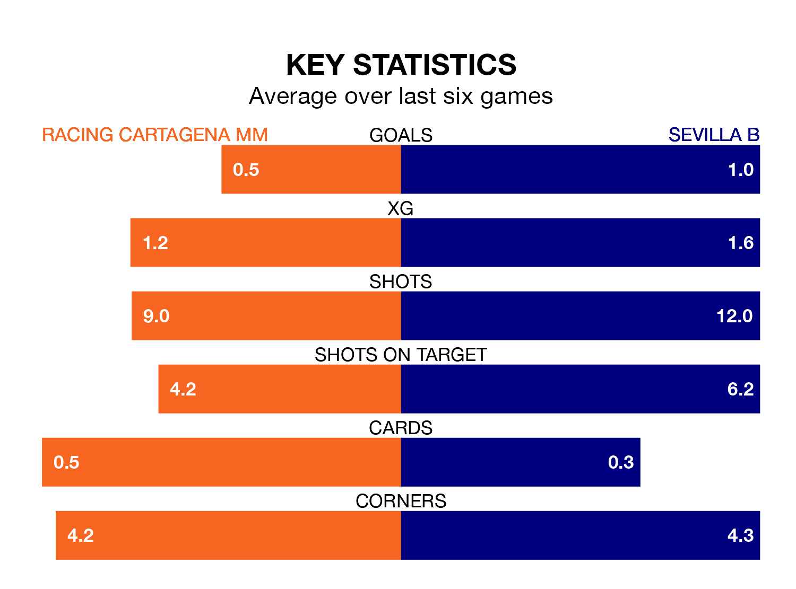

Sevilla B visit Racing Cartagena MM at the Estadio El Pitín on Saturday on the back of three consecutive wins in the Segunda División RFEF Group 4.
Sevilla B have picked up 12 points from their last six games, and they face a Racing Cartagena MM side who have lost their last two matches, and collected five points from the last possible 18.
With 46 goals in 28 games so far this season, Sevilla B are the league's highest scorers with 1.6 goals per game. And they are conceding fewer than average, letting in 14 goals at a rate of 0.5 per game.
Racing Cartagena MM, meanwhile, are below average scorers, with 0.6 goals per game, compared to a league average of 1.0. They have conceded 0.8 goals per game.
The visitors are top of the table after 28 games, of which they have won 16 and drawn nine, earning 57 points.
The home team are 13 places behind Sevilla B in 14th, with seven wins and 11 draws putting them on 32 points.
In the last three years, Racing Cartagena MM and Sevilla B have played each other on three occasions. They won one each, and they drew once.
Their last meeting was on November 19, when Sevilla B won 1-0 at home.
Racing Cartagena MM's last match was on Sunday, a 2-1 loss against CD San Roque de Lepe, with Raúl González Robles getting the goal for Racing Cartagena MM.
Sevilla B beat Linense 2-1 last time out, on March 23, with Ibrahima Sow and Ramón Martinez Gil on the scoresheet.
Updated: 12:16 (UTC), 25/03/24